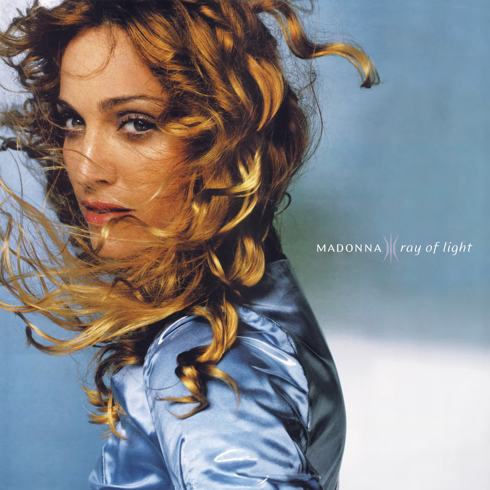

In the mid-nineties, Madonna found herself at a crossroads. She had been dominating pop music as a provocateur and had gained an extremely loyal following, but also many critics for her affinity for pushing boundaries in many aspects of her self expression. In 1996, the birth of her daughter sparked a profound and personal artistic shift.
In February of 1998, she released Ray of Light, a stunning departure that traded her previous era's overt sensuality for introspection, spirituality, and electronic textures. Her and her collaborators crafted a sonic experience that explored themes of motherhood, self-discovery, healing, and spiritual awakening. All filtered through a lens of trip-hop, techno, and ambient soundscapes that still feel futuristic, almost thirty years after its release.
My personal favorite tracks on this album are Substitute for Love, Nothing Really Matters, and Shanti Ashtangi. This album is a great listen when you are looking for something that will simultaneously make you feel like doing some self reflection and also dancing!